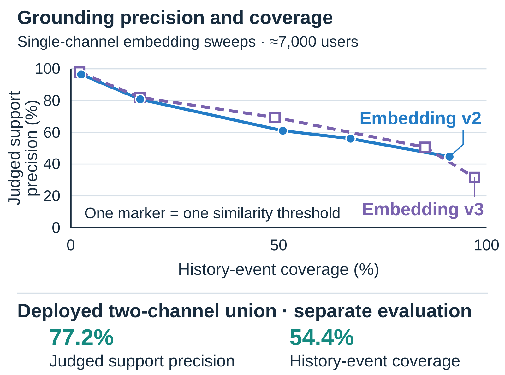

把「真人秀」压掉、把「绘画」加进去，下一条信息流会不会变：CLEAR 怎样让兴趣既看得懂又能改结果
你在视频信息流里刷到了滑板，也刷到了真人秀。系统根据你最近的活动，推断出你对 Sports、Skateboarding 感兴趣，并把这些兴趣用自然语言列在一份可以打开的档案里。你觉得真人秀不是自己的口味，把它放到「少看」；同时又补上了一条新兴趣：Painting。
问题是，改完之后下一条信息流会不会真的变。很多推荐系统把口味做成隐向量，人既看不出系统到底推断了什么持久偏好，也难确认一次更正会不会持续生效。点踩一条具体内容，并不等于改掉一种更持久的偏好，也难确认这次修改会不会一直留在后面的检索和排序里。
这篇论文来自 Meta，提出并上线了 CLEAR（Controllable and Legible End-to-end Architecture for Recommendation）。它要解决的是同一层兴趣怎样既让人看得懂，又能真正改到后续触达。相关工作已经研究过可读画像、模拟编辑和重排；消费级控制则常常是服务方预先定义好的主题、关注或单条内容开关。CLEAR 把推断出的兴趣做成可检查的自然语言条目，把用户接受的新增和压制存成具有优先权的偏好状态，并用行为 grounding 把推断兴趣回溯到用户自己的历史事件。同一条兴趣对象还是服务地址：标签和改写去做词法检索，支撑事件去做行为检索，投影去查 embedding 索引，稳定身份用于排序、归因和曝光控制。新声明的兴趣即使还没有行为支撑，也走同一个身份，先靠主题检索进入候选。在直接用户评审里，展示出来的兴趣约有 88.5% 被评为准确。对新声明的兴趣，按测试时的移除顺序拿掉按兴趣做的候选召回后，当天触达下降 13.7 个百分点。相关组件已在 Instagram 和 Facebook 的四个场景运行一年以上。
一条可编辑的自然语言兴趣，既要让人看得懂并改得了，也要成为检索、排序和曝光控制都能用的服务地址；CLEAR 接到现有链路上的，只是这一层可编辑兴趣。
看得懂还不够，改了还得进服务链路
论文把两项性质分开定义。兴趣层可读（legible），是说人能看着这些自然语言条目，判断系统的推断是否符合自己的兴趣。兴趣层可操纵（steerable），是说接受的修改会成为服务真正消费的持久偏好状态，并且改这条服务路径，能测到后来触达的变化。只把兴趣展示出来，还不能证明推荐器按它行动。
在生产里，Meta 的 Biography 服务负责构建 CLEAR 的推断兴趣档案。Instagram 的 Your Algorithm 和 Tune Your Explore 把这层兴趣开放给用户检查和修改。界面上看到的是更大服务兴趣层里的一个排序子集，用的是自然语言标签，不是模型坐标。每条被服务的记录绑着一个规范化的兴趣身份，以及来源、支撑证据、查询投影和偏好状态。显式新增或压制与模型输出分开存放，在用户再次更改前一直优先；推断出的兴趣可以随着支撑衰减而过期，用户接受过的偏好在后来的推断刷新里仍会留下。
如果只做更简单的展示层，后来的生成结果会把你刚压掉的 Reality TV 又写回去。CLEAR 把显式新增和压制放在推断状态合并之外，就是为了不让后来的推断悄悄撤销这次更正。
一条兴趣怎样变成检索和服务控制的地址
对推断出来的兴趣，系统还要先问：这句话对应的是用户自己做过的哪些事。CLEAR 把这句短语投影到推荐器的共互动空间，在该用户自己的历史上做反向查找。一条内容理解通道和一条共互动训练的媒体通道分别找回候选支撑事件，去重后的并集就是这条兴趣的 support set（支撑集合）。集合够不够大，决定这条推断能不能留下来；不同短语若被同一批活动同时支撑，还会被当成对这个人重复的条目。
用户新写上的兴趣走另一套约定。Painting 可以出现在任何匹配历史之前，因此不必先通过推断候选的支撑门槛。它仍然拿到同一个规范化身份、同一套查询投影和主题匹配路径。若历史上恰好已有相关活动，可以立刻当作个性化锚点；之后用户对新内容的反应，再进入普通历史，供后续推断使用。
到了推荐链路，这条兴趣对象露出四个字段。展示标签加上按档案改写过的查询，变成个性化的词法检索。支撑事件在用户自己的共互动邻域里做 trigger-to-item 检索。查询投影去近似最近邻索引里取邻近内容。稳定的「用户–兴趣」身份则用来键缓存供给、归因和曝光记账。行为检索用的是合取：候选既要靠近用户自己的支撑事件，又要在内容理解特征下匹配这条兴趣。所以一个全局很切题、却和这个人的行为邻域无关的视频，或者一个行为上很近、主题却跑偏的视频，都过不去。
新声明先走词法和 embedding 这两条路，把候选引进来；等有了行为证据，support set 路径再把供给个性化。普通推荐送来的候选，也会用同一套基于内容和语义特征的兴趣匹配器，判断它属于哪条声明兴趣。来源身份只说明候选从哪条路来，主题归因说明它匹配哪条兴趣，这两步是分开的。所以碰巧切题的普通候选，不必来自专用检索，也可以记到同一条兴趣的曝光账上。于是后面的控制器看到的是总曝光，而不是只看见专用检索自己塞进去的那些。

声明兴趣的服务路径在 Meta 称为 Carrera。按兴趣条件检索出的候选，会和普通候选池合并后再排序。因此改变的是哪些物品有资格参与竞争，而不只是把一个固定列表重新排一遍。
走一遍：压掉真人秀、加上绘画
下面按论文图 1 和图 2 里的例子走一遍。数字来自后文的线上实验，例子本身来自论文图，图中的排序是示意。
第一步，生成和检查。大模型根据你最近的活动提出兴趣，行为 grounding 先核对推断条目，再允许它们进入展示档案。你看到 Sports、Skateboarding，也看到 Reality TV。你把 Reality TV 压制掉，并加上 Painting。
第二步，写入具有优先权的状态。正向操作新增或提升一个身份，负向操作删除或压制它。这次修改立刻更新被服务的兴趣层。Painting 哪怕还没有任何支撑事件，也会马上获得稳定的服务身份；Reality TV 的显式压制会被单独保存，后来的推断刷新不能把它悄悄写回来。
第三步，给这条新兴趣找候选。标签 “Painting” 本身成为词法查询，按档案改写还可以扩出图 2 里那样的 “watercolor tutorial”。查询投影去 embedding 索引里取邻近内容。因为此刻还没有支撑事件，trigger-to-item 这条路暂时还用不上，初始供给先靠主题检索。这些候选与普通池合并，再过一道硬主题门，跑题的会被挡住。
第四步，让它们在排序里争得过。早晚期排序会加上临时的声明条件项，让这条新兴趣的候选在行为还不够多时也能竞争；少量头部位置还可以预留给匹配这次新声明的候选，保证的是位置，而不只是竞争力。Reality TV 则走服务时的负向过滤。两边操作的都是规范化身份，不只是屏幕上的那几个字。
第五步，按曝光调节，而不是把所有匹配都一股脑往上推。交付控制器 Fireball 维护一个衰减的实时计数，记录这条「用户–兴趣」已经实现的曝光。普通源和专用源只要被归因到 Painting，都算进同一本账。曝光偏高就减弱继续提升，衰减后再有资格补货。补货改变的是这条兴趣要不要获得新供给，排序改变的是已经在池子里的候选有多能打。控制器不改模型参数；用户之后的观看和互动，才会进入推荐器原来的学习环。

如果只改展示文案、不改候选供给，就不能保证新增的 Painting 兴趣获得额外候选。普通推荐有时本来也会送上切题内容，专用供给要补的是池子里还没有的那些。如果只在固定池子里加排序分，没有供给时同样排不出新主题。论文用线上累积消融把这几层拆开看。
改完之后，触达到底是哪一层在起作用
先看这层兴趣人能不能认。393 名用户给 7,261 条展示兴趣打分，约 88.5% 被评为准确。被拒绝的条目里，41% 是看过但并无个人兴趣，29% 是短暂兴趣，21% 是完全没有个人兴趣。所以可读档案的价值，也包括把这类错位摊开来让人改。
生成器和展示不是同一回事。在共享历史格式、用户确认过的参照和同一语义裁判的离线基准上，任务向的 Specialized 3B 生成器把前十项目标上的 mean-user F1@10 做到 0.3967，高于 Gemini 2.5 Pro 的 0.3633，也高于此前生产生成器的 0.1911。这说明针对固定前十目标做的专门训练，可以提高排在前面的兴趣质量。但 Gemini 2.5 Pro 的全档案 F1@all 是 0.7051，高于 Specialized 3B 的 0.5493，所以前十领先不能推广成整份档案都更好。直接评审评估的是已经发出去的展示，基准评估的是 grounding 和展示选择之前的生成。
推断兴趣要不要留下，还取决于支撑够不够。把最低支撑从 0 条提到 3 条事件，全档案精确率从 69.9% 升到 77.4%，参照召回从 46.2% 降到 28.7%。作者选用三点阈值，是为了把展示兴趣的全档案精确率放在前面。上线的文本加媒体匹配器，支撑精确率是 77.2%，并能把 54.4% 的去重历史事件匹配到至少一条留下的兴趣。 Hoot 说
正文已经按图 1 和图 2 走完：把 Reality TV 压掉、把 Painting 加进去之后，这条兴趣怎样进入检索、排序和曝光记账。这里只追一个还没拆开的问题：推断兴趣要留下，支撑事件最少要几条，档案的精确率和召回会怎么变。下面用正文同一组数字。
支撑下限 0 条时精确率 69.9%、召回 46.2% → 提到 3 条后精确率升 7.5 个百分点 → 召回降 17.5 个百分点 → 作者把全档案精确率放在前面，图 3 的上线匹配器接近这个三点结果
- 支撑下限 0 条 → 精确率 69.9%，召回 46.2%推断兴趣要不要留下，先看支撑够不够。把最低支撑设成 0 条事件时，全档案精确率是 69.9%，参照召回是 46.2%。支撑下限 = 0 条
- 下限提到 3 条 → 精确率升高 7.5 个百分点把最低支撑从 0 条提到 3 条事件后，全档案精确率升到 77.4%。也就是说，留下的展示兴趣里，对得上参照的比例升高了 7.5 个百分点。77.4 − 69.9 = 7.5 个百分点
- 同一变动 → 参照召回下降 17.5 个百分点同一道门槛也把参照召回从 46.2% 降到 28.7%。少留下的那些条目里，有一部分本来还能对上参照，只是支撑不到 3 条。46.2 − 28.7 = 17.5 个百分点
- 三点阈值 + 上线匹配器 → 优先保证精确率作者选用三点阈值，是为了把展示兴趣的全档案精确率放在前面。图 3 里上线的文本加媒体匹配器，支撑精确率是 77.2%，并能把 54.4% 的去重历史事件匹配到至少一条留下的兴趣。上线支撑精确率 77.2%，接近 77.4%
这组数字回答的是推断兴趣能不能进入展示档案，不是用户改完之后检索、占位和排序哪一层在拉动当天触达。

出处
论文把最低支撑从 0 条提到 3 条事件时，全档案精确率从 69.9% 升到 77.4%，参照召回从 46.2% 降到 28.7%；作者选用三点阈值是为了把展示兴趣的全档案精确率放在前面。上线的文本加媒体匹配器支撑精确率是 77.2%，并能把 54.4% 的去重历史事件匹配到至少一条留下的兴趣。7.5 和 17.5 是这组已报百分比的差。
在 Instagram 生产里，系统整体表现是：用户新声明的兴趣里，平均有 79.6% 会在当天收到至少一条被归因的匹配视频；在持有声明兴趣的合格用户中，82.6% 的人会把至少 5% 的推荐内容算到这些兴趣上。一个独立于服务门控的多模态裁判，把抽样到的 87.2% 匹配曝光评为切题。补货相对此前按年龄限制的策略，让至少看满 3 秒的兴趣响应提高 8.34%；实时每兴趣记账和重新校准的量调控，则把记录到的淹没天数指标降低 15.4%。这些是系统层面的水平或相对变化，还没有把各层拆开。
各层的贡献来自一场五组、按用户随机的累积消融，终点是新声明兴趣的当天匹配触达。按测试时的移除顺序，损失如下。
| 拿掉的层 | 当天触达下降 |
|---|---|
| 按兴趣做的候选召回 | 13.7 个百分点 |
| 预留头部位插入 | 11.1 个百分点 |
| 为新增兴趣加的排序项 | 8.7 个百分点 |
| 以上各层全部拿掉 | 33.5 个百分点 |
（数字来自论文表 3；所有报告的随机对比 p<0.01）
这说明在这个移除顺序里，供给、位置和排序竞争力各自都有贡献，没有任何一层占到 33.5 里的一大半。即使所有层都关掉，仍有相当比例的新声明兴趣会在当天收到匹配视频，因为推荐器有时本来就会送上切题内容。负向过滤在这个「正向新增」终点上没有可测变化，这和它的职责一致：它负责去掉不想看的内容，而不是把请求的内容送出去。另一次随机实验里，在生产过滤之上做相似度感知降权，把被压制兴趣的当天再出现降低了 11.8%。
归因到声明兴趣的内容，点赞率是 11.55%，同批用户的其他推荐是 9.90%。但三秒跳过也高 1.6 个百分点，单次曝光停留低 10%。相对搜索结果视频，点赞高到 1.9 倍，三秒跳过低 8.4 个百分点，停留高 26%。所以和同屏其他推荐比，反馈是混杂的；相对搜索结果视频，这些曝光的点赞、跳过和停留指标更好。
这对做可编辑推荐的人意味着什么
先问两个问题：人能不能看懂并改掉系统推断的兴趣；改完之后，这条身份有没有进入检索、占位、排序和曝光记账。只做展示层，还不能说推荐已经被用户指挥了。
如果要接进现有排序而不另起一套骨干，可以把兴趣对象做成服务地址，而不是只把它当成一段说明文字。新声明允许先走主题检索，等行为起来后再用支撑事件做个性化，不必假装用户过去就已经喜欢这件事。量调控要单独记账：所有被归因到同一兴趣的曝光，无论来自专用检索还是普通推荐，都进同一本账，否则一个主题很容易把信息流灌满。看效果时，也要同时看当天是否送到、是否切题，以及停留和跳过，不要只报点赞。
局限
表 3 里 13.7、11.1、8.7 这些分解，只对论文测试的移除顺序成立，不能当成与顺序无关的贡献拆分。全部拿掉的 33.5 个百分点，是外层对照，也不等于把三层数字简单相加后再解释。
直接评审是描述性结果，不是随机实验。Specialized 3B 只在固定前十的 F1@10 上超过 Gemini 2.5 Pro，全档案 F1@all 仍然落后。归因内容的点赞更高，但同屏停留更短、跳过更多，不能把「可操纵」读成体验全面更好。
CLEAR 接到现有推荐链路上的，是一层可检查、可更正的兴趣，生产评估也集中在 Instagram 的声明兴趣服务上。论文没有把整个隐状态摊开给用户看。
读完这篇，你觉得
夜读鸮记下了，谢谢你的反馈。
点一下即可，无需登录；再点一次撤回。只统计匿名次数，不记录你是谁。
讨论
欢迎补充实验细节、复现经验或不同看法。需 GitHub 登录。
正在加载讨论…